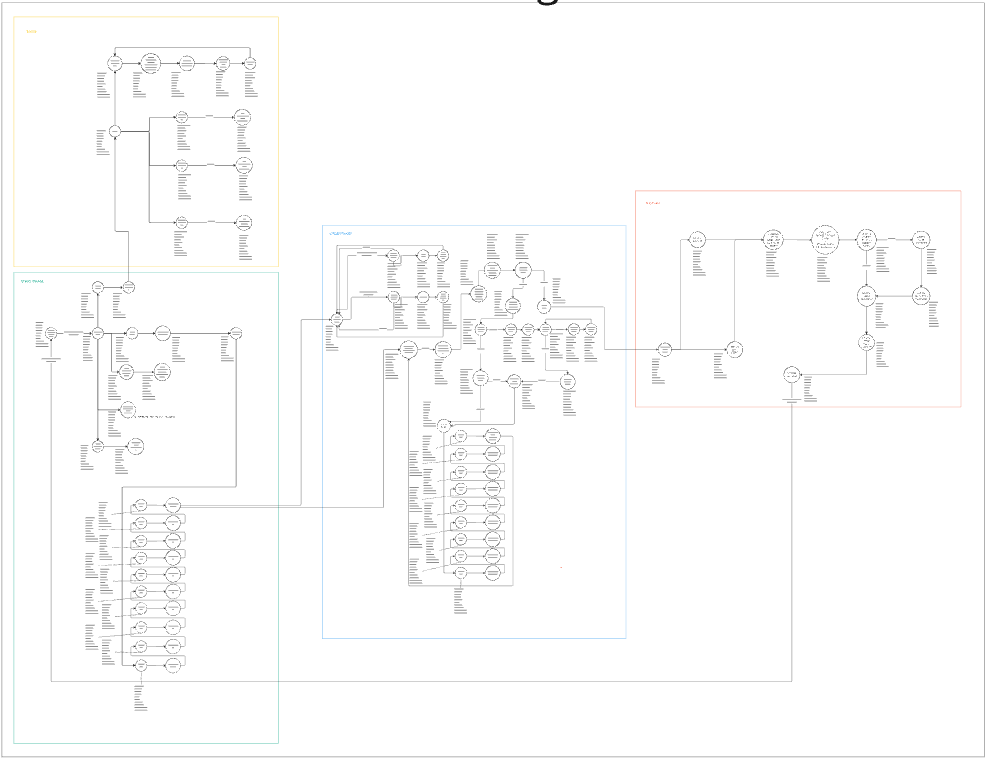
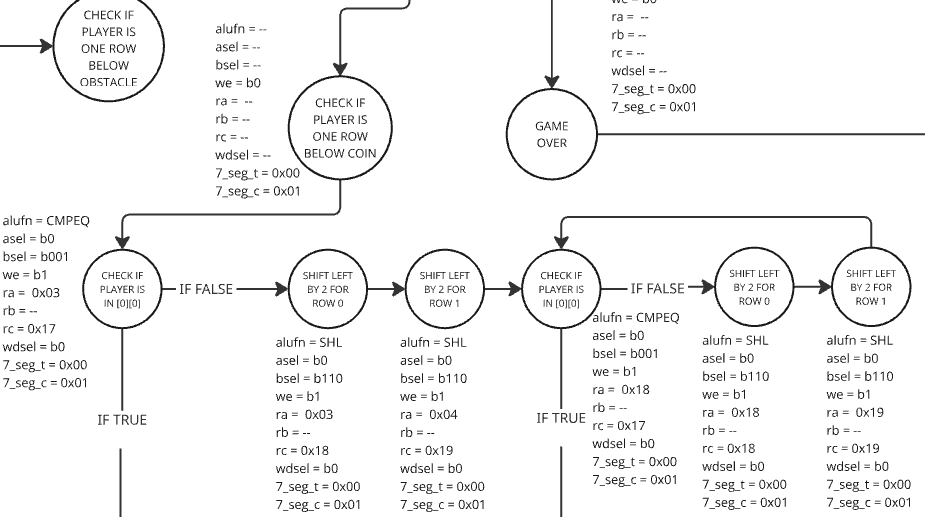

April 15, 2023
Inspired by the highly popular mobile game Temple Run, my team and I set out to create a handheld arcade experience using FPGA hardware. Our goal was ambitious: replicate the thrill of dodging obstacles and chasing high scores—but entirely in hardware, without a CPU. This link brings you to the Github repository.
As the architect of the game’s logic, I drafted the state machine diagram that became PixelRun’s backbone and translated it into Lucid code into a functional FPGA implementation. Translating fluid gameplay (like dodges and collisions) into rigid hardware was like writing poetry in binary—every decision had to account for clock cycles and finite memory. For example, storing the player’s position required carefully timed registers to avoid glitches, while collision detection demanded combinational logic that compared coordinates within a single cycle. Other challenge was to make the gameplay infinite and unpredictable, by generating the incoming obstacle course randomly.
The full finite state machine system!
Condition checking for coin collection.
I worked closely with two other teammates, one of them designed the PCB and assembled the hardware components, while the other programmed for the WS2812B LED strip display. Integration testing and debugging proved to be a real challenge; I still remember the late night we spent troubleshooting the 7-segment display. After hours of frustration, we finally discovered the issue: a simple pin connection had been accidentally swapped with another!
In the end, we managed to assemble and debug everything, producing a fully functional handheld console that captured the essence of Temple Run in hardware. The final build featured smooth LED-display, tactile key controls, and an infinite, procedurally generated obstacle course—all synchronized to the FPGA’s clock.
Developing PixelRun deepened my expertise in FPGA-based hardware design and synchronous logic synthesis. Collaborating on PCB assembly and hardware-software integration—such as debugging signal propagation delays and optimizing combinational logic—honed my ability to bridge system-level architecture (game logic) with low-level hardware debugging. The project solidified my grasp of hardware-software co-design, where creative game elements were tightly coupled with FPGA resource limitations.
Seeing players react to PixelRun at SUTD’s showcase—grinning as they dodged obstacles and groaned at near-misses—validated every late-night debugging session. Moreover, we were surprised and grateful to hear that Pixel Run has been recognised as the most outstanding project at the showcase!